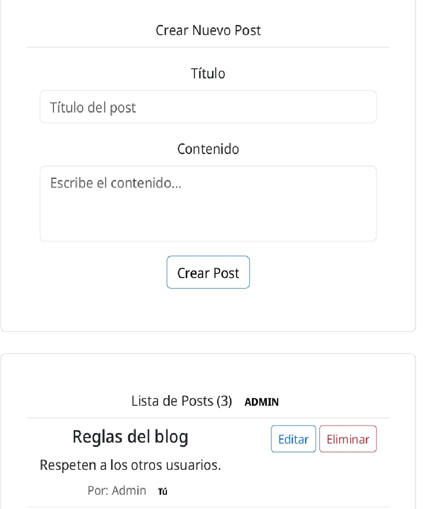
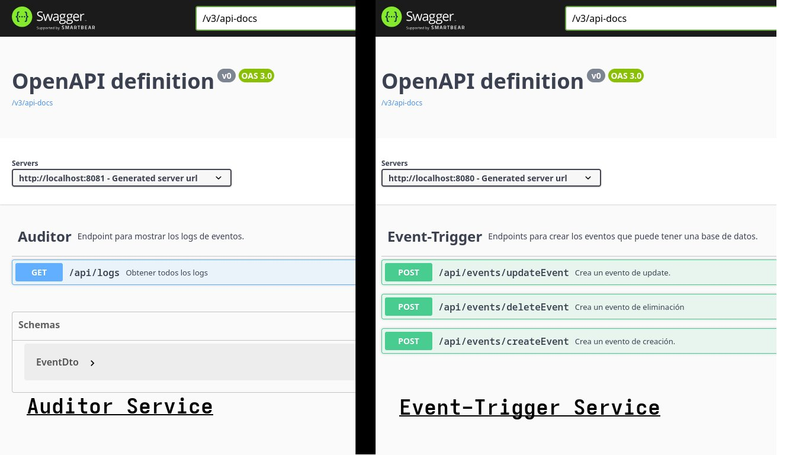

Transformo requerimientos complejos en servicios robustos y escalables. Mi prioridad es la entrega de software de alta calidad mediante la aplicación de principios SOLID, Clean Code y estrategias de testing. Mi enfoque no es solo que el código funcione, sino que sea sostenible y fácil de evolucionar para el equipo.
Una API Rest que gestiona los posts de un blog. Están almacenados en una base de datos en memoria (h2) y la api es consumida por un frontend hecho en React.


Arquitectura de microservicios distribuida. Un servicio emisor de eventos y un receptor encargado del procesamiento de logs y persistencia en base de datos NoSQL.
Java 17+, Spring Framework, Spring Security, JPA/Hibernate. RabbitMQ.
Docker, Maven, Git, GitAction.
MySQL, MongoDB, JUnit 5, Mockito. Swagger.
"Soy alguien que diseña y piensa antes de escribir código."
Soy un desarrollador quien piensa en patrones de diseño y siempre tiene en cuenta los principios SOLID.
Mi enfoque está en hallar soluciones y implementar lo necesario para que el código funcione, sea escalable, y sea lo más eficiente posible..